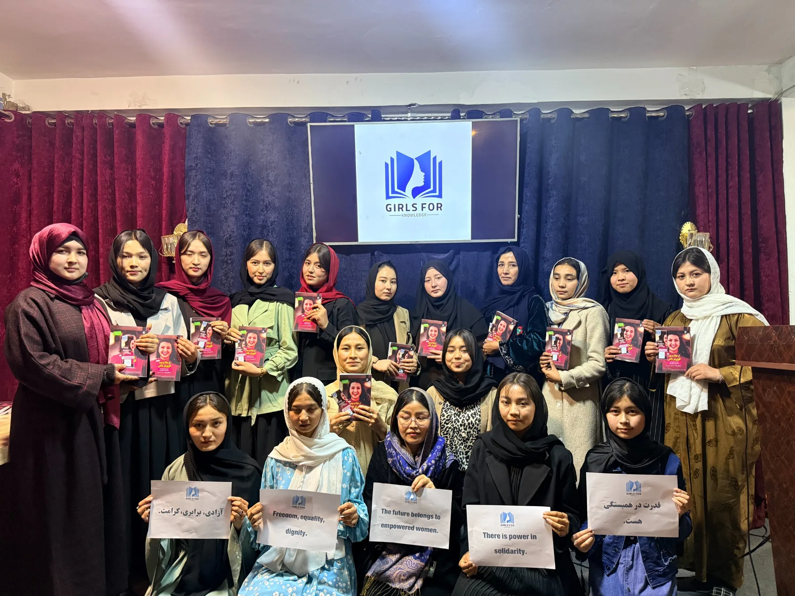
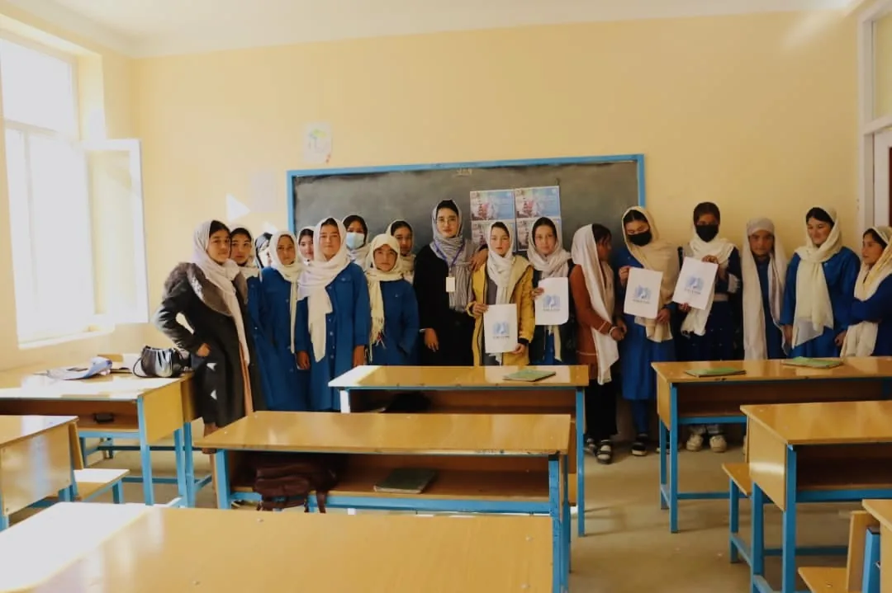
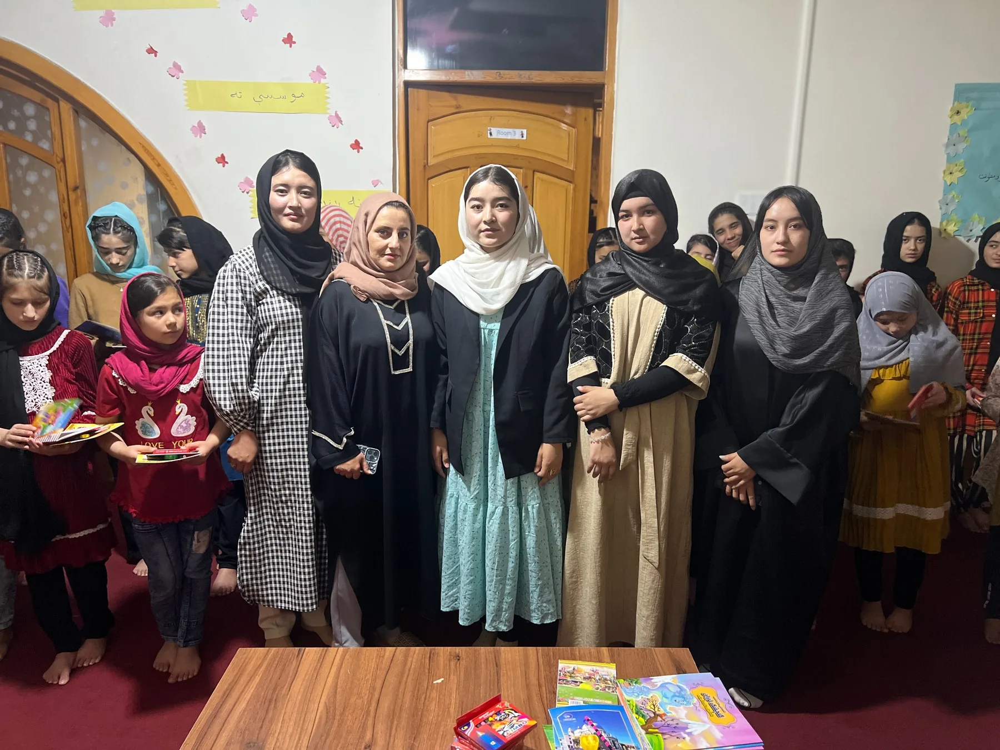
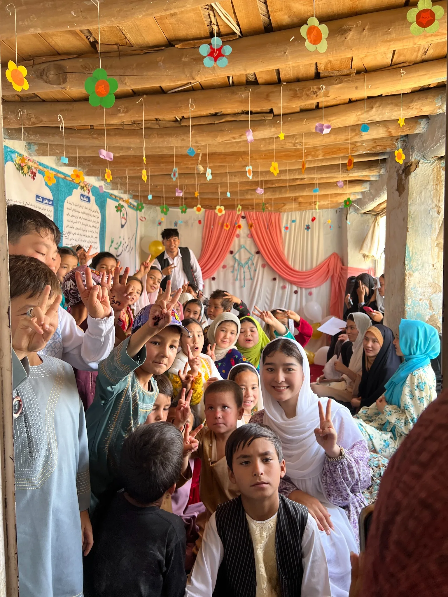
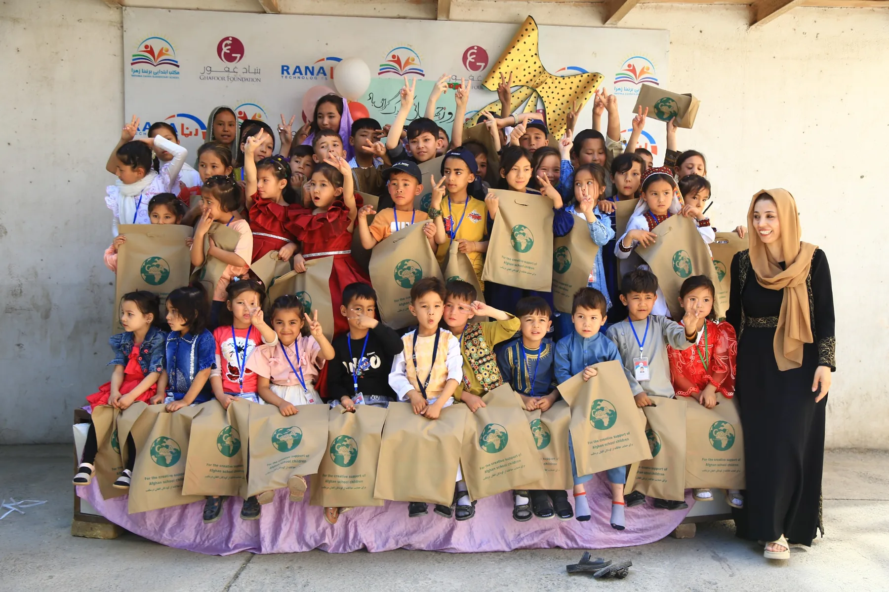
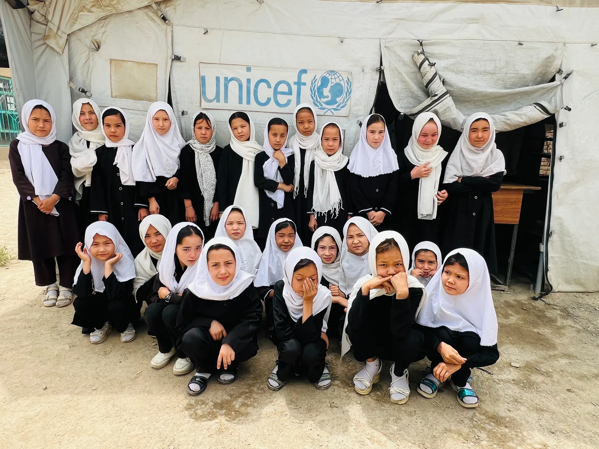

Education Access
Learning activities and educational support designed to help girls continue developing their knowledge.

A community-centered initiative creating space for girls and young women to learn, build confidence, and stay connected to opportunity.
Every girl deserves a place to keep learning, growing, and imagining what comes next.
Girls for Knowledge brings learners and supporters together around education, skills, and community. Our work is built on the belief that access to knowledge strengthens individuals, families, and communities.
Read our storyThese program descriptions are an initial website draft and can be updated when your official program information is ready.
Learning activities and educational support designed to help girls continue developing their knowledge.
Opportunities to strengthen communication, confidence, leadership, and practical life skills.
A supportive network connecting learners, educators, volunteers, and community partners.

We aim to create welcoming learning spaces where girls can participate, ask questions, develop skills, and feel connected to people who believe in their potential.
Get involved




Support Girls for Knowledge, volunteer your time, or contact us to explore ways to work together.